FUNCIÓN DE MASA INICIAL:
PROPIEDADES Y SUS CARACTERÍSTICAS EN EL VECINDARIO SOLAR
Matías Meili
Introducción:
Es sabido de los estudios de la evolución estelar, que la masa es un factor determinante en el desarrollo evolutivo de la estrella. La masa puede determinar el tiempo de vida de una estrella, su brillo, su radio, etc, y conociéndola podemos tratar de predecir cantidades como la energía aportada al medio interestelar a lo largo de su vida, o la masa de nuevos metales producidos en ella. Además, es de mucho interés saber cómo se distribuyen o pueden llegar a distribuir las masas en distintos grupos de asociaciones estelares, como las galaxias o los cúmulos, por lo tanto, no es de sorprenderse que nos interese saber si existe algún tipo de relación que nos indique la cantidad de estrellas de determinada masa en un dado lugar. Alrededor de esto gira el concepto de la función de masa inicial, que indica cómo se distribuye la masa en las estrellas al nacer, y se la define como una densidad de probabilidades de la distribución de masa. Es una función muy importante porque funciona de vínculo entre las teorías de evolución estelar y evolución galáctica. Además, la determinación observacional de la función de masa inicial (FMI a partir de ahora) y sus posibles variaciones en tiempo y espacio aportan restricciones fundamentales en la teoría de formación estelar, y es justamente de esta determinación observacional de la que vamos a hablar.
Algunas definiciones y aplicaciones:
Para comenzar a armar la idea de esta función de masa, podemos comenzar con un modelo simple, y visualizar a las estrellas formándose individualmente en posiciones aleatorias a lo largo del disco galáctico a una velocidad constante. Si el valor de las masas en cada una de estas posiciones es una variable aleatoria que se distribuye acorde a una densidad de probabilidad f0(m), se puede pensar a cada posición como un evento temporal estocástico m(t), y el conjunto de posiciones constituye un arreglo estadístico. Si además este proceso es estacionario en el tiempo y homogéneo en espacio, se puede dar una definición consistente e inequívoca de f0(m): f0(m)dm es la fracción de estrellas en un dado volumen de espacio con masas en el intervalo m y m + dm al nacer. Esta fracción de estrellas deberá ser corregida en la práctica debido a la dependencia del tiempo de vida con la masa, pero esta corrección es en un principio simple si asumimos una velocidad de nacimiento constante.
Pero las estrellas no se forman de manera individual, sino que lo hacen en grupos, o cúmulos. Para acomodarnos a este hecho, tenemos que revisar el significado de la FMI. Si asumimos que cada cúmulo representa una realización de este evento de formación estelar, y por ende de la FMI, cada cúmulo podrá diferir en sus distribuciones de masas debido a variaciones meramente estadísticas, pero el promedio del conjunto sobre un gran número de cúmulos será significativo. Una forma de estimar empíricamente la FMI definida de esta manera podría ser al analizar estrellas de campo, asumiendo que son ex miembros de cúmulos rotos, o tratando de promediar un número de distribuciones de masa de cúmulos determinados individualmente.
Pero esta definición no logra ser práctica y consistente, sin asumir que la forma de la FMI no ha variado sistemáticamente con el tiempo o la posición de la galaxia. Consideremos la colección de estrellas de campo en el vecindario solar que contiene un gran número de cúmulos y asociaciones dentro de un rango de tiempos y posiciones en la galaxia. El problema con esta muestra es que la edad una estrella está limitada por su tiempo de vida, que es una función sensible de su masa. Las estrellas de campo con masas como las del Sol o mayores viven por más de 1010 años y se formaron mayormente en ubicaciones muy lejanas de sus ubicaciones actuales, mientras que las estrellas muy masivas pueden llegar a edades no mayores que 107 años y son observadas cerca de sus lugares de nacimiento. Por lo que al construir la distribución de masas de estrellas de campo sólo vamos a obtener un promedio de grupo si, de nuevo, la FMI representa un proceso que es estacionario en el tiempo y homogéneo en el espacio. Toda variación espacial o temporal que no sea resultado de la aleatoriedad va a resultar en una FMI empírica que no tenga una relación directa con la FMI del promedio de grupo espacial-temporal a lo largo de la historia de la galaxia, o el promedio de grupo espacial de una época en particular, y no hay manera de corregir la FMI empírica sin un modelo teórico de como varía. Además, no se puede derivar una FMI promedio a lo largo de todas las edades y dimensiones de la galaxia porque el rango de edades y lugares de nacimiento dependen de la masa, por lo que se requiere un modelo detallado de migración estelar.
En principio no tenemos ninguna justificación para asumir que la FMI es constante en tiempo o espacio. La FMI es en realidad una probabilidad condicional cuya forma puede depender de la abundancia metálica, densidad del gas, velocidades de turbulencia, u otras propiedades del medio interestelar, y muchas de estas propiedades han variado ciertamente con el tiempo y la posición en nuestra galaxia.
Otro enfoque podría ser determinar el promedio de las distribuciones de masa para una muestra grande de cúmulos estelares y asociaciones con aproximadamente la misma edad. La FMI resultante sería un promedio de grupo espacial en algún momento del pasado. Usando grupos de distintas edades podríamos probar si la FMI es un proceso estacionario, y si no lo es, estimar su dependencia temporal. Lamentablemente varias consideraciones imposibilitan la aplicación práctica de esta idea. Cada grupo de edad nos ofrecería distintos rangos de masas estelares por los efectos de la evolución estelar en el límite superior de masa del cúmulo y por el hecho de que el límite inferior de masa en el que podemos identificar miembros del cúmulo es una función de la distancia del cúmulo al Sol. Por lo que de manera optimista, podríamos esperar usar las muestras de cúmulos para determinar la forma del espectro de masas sobre un número de intervalos de masa, cada uno correspondiente a una época diferente del pasado. Pero estos intervalos no se podrían combinar para formar una f(m) en todo el rango de masas estelares sin de nuevo asumir que la FMI es un proceso estacionario y homogéneo.
Por lo tanto, estamos en la posición incómoda de tener que hacer grandes asunciones para poder obtener una distribución de masa que corresponda a una definición consistente de la FMI y se pueda relacionar a la teoría de formación estelar. Lo mejor que podemos hacer es intentar una estimación de la FMI asumiendo que es constante en espacio y tiempo, y luego examinar la naturaleza de las fluctuaciones de la función entre grupos individuales de estrellas, y buscar evidencia con respecto a variaciones sistemáticas con la posición y el tiempo de nuestra galaxia y otras.
Definimos el espectro de masa de las estrellas f(m) tal que f(m)dm es el número de estrellas formadas al mismo tiempo en un determinado volumen de espacio con masa en el intervalo m y m + dm al nacer. Con la frase “al nacer” queremos decir el momento en que la estrella se asienta en la etapa de quema de hidrógeno de la secuencia principal. Se puede definir para un cúmulo individual, en cuyo caso representa una realización de f(m), o para una muestra de cúmulos o estrellas de campo. En este caso f(m) representa un promedio de grupo, pero sólo es significativo si como dijimos la función es independiente del tiempo y la posición espacial.
Las unidades de f(m) quedan enteramente definidas por la normalización que se desee. Se suele tratar a f(m) como una función de densidad de probabilidad estándar, tal que
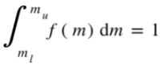
donde ml y mu son los límites de masa inferior y superior, que también pueden ser funciones del tiempo, y
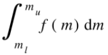
es la fracción de estrellas con masas entre ml y mu. En algunas aplicaciones se normaliza al número total de estrellas en un determinado volumen o en un cilindro dirigido a través del disco de una galaxia. En otras aplicaciones la normalización es arbitraria pues en mayor parte importa la forma del espectro de masa.
Los límites superior e inferior de f(m), ml y mu son parámetros que se cree tienen valores de ml≈0.05-0.1M☉ y mu≈100-500M☉.
En la práctica suele ser conveniente reemplazar el espectro de masa f(m), la fracción o número de estrellas nacidas en un intervalo de unidad de masa dm, por otra función que dé la fracción o número de estrellas nacidas en un intervalo de unidad de logaritmo de la masa dlog m. Nos referimos a esta función como la función de masa F(log m), relacionada con f(m) por
F(log m) =(ln10) m f(m)
Cuando nos referimos al número de estrellas de campo en un área especialmente definida del disco galáctico integrado a lo largo de la historia de la galaxia (asumiendo una función de masa constante) a la función se le da el símbolo especial ξ(log m) y se conoce como función de masa inicial. En muchas aplicaciones se puede pensar a F(log m) y ξ(log m) como iguales a diferencia de un factor de escala.
Algunos parámetros muy útiles son los índices del espectro de masa y la función de masa, definidos como
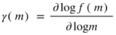
y
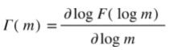
Estas son las pendientes logarítmicas de f(m) y F(m) evaluadas en la masa m. Para espectros de masa de leyes de potencia, estos índices son independientes de la masa.
Unas cantidades de interés son la distribución acumulativa de números, que es la fracción de estrellas más masivas que m
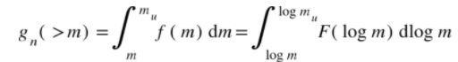
Y la distribución acumulativa de masa, que es la fracción de la masa total de todas las estrellas contenidas en estrellas más masivas que m
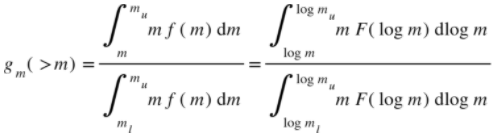
Considerando una nube interestelar que forma estrellas a una velocidad constante B con un espectro de masa f(m) constante normalizado, un tiempo Δt luego de que comenzó la formación estelar, el número de estrellas más masivas que una masa m' esperado es
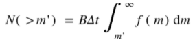
con el límite superior tomado como infinito por simplicidad. Al hacer N(>m')=1 se da el tiempo Δt(m') esperado para la masa más grande m'.
Para una función de masa que sea una ley de potencia
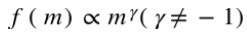
Al comparar dos masas m1 y m2, con m2>m1, esto da
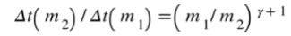
Por ejemplo, si γ=2, la primera estrella de 10 masas solares se espera que se forme 10 veces más tarde que la primera estrella de 1 masa solar. De hecho hay evidencia de que la formación estelar va de estrellas menos masivas a más masivas en varios cúmulos de formación estelar.
Una consecuencia interesante de la naturaleza probabilística de f(m) es que no nos debería sorprender la aparición de una brecha entre las dos masas más grandes observadas en un cúmulo. La probabilidad de que una estrella tenga una masa más grande que xm1 es
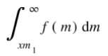
o xy+1 para una ley de potencia f(m). Por lo que deberíamos ver una distribución más o menos continua de masas hasta la masa m1 en un cúmulo, ninguna estrella entre m1 y xm1, y luego N estrellas más masivas que xm1. Si las masas de dos estrellas formadas consecutivamente son independientes, la probabilidad de este evento para una ley de potencia f(m) es xN(γ+1).Por ejemplo, si γ=-2, la probabilidad para un factor de una brecha de 3 masas con N estrellas encima de la brecha es 3-N.
Para la mayoría de las aplicaciones de la FMI a problemas astrofísicos, es natural buscar una forma analítica que pueda proveer una aproximación de la FMI real. Es un proceder que se presta fácilmente a derivaciones teóricas y aplicaciones prácticas de la FMI. Algunas de las funciones de distribución más comúnmente adoptadas son:
La distribución de ley de potencia
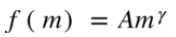
Es la forma más común, y su propiedad distintiva es que no tiene una escala de preferencia, aunque es raro encontrarla realmente en un sistema de masa artificial o natural. De todas maneras, a menudo los datos son muy inciertos y esta ley encaja bien. La normalización de esta función a la unidad da
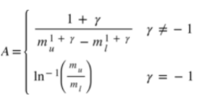
Cuando γ=0, la distribución es la uniforme.
Otras distribuciones comunes son:
La distribución gamma
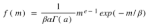
Con
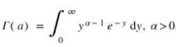
La distribución exponencial (α=1 en la distribución gamma)
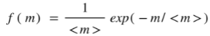
La distribución de Rayleigh
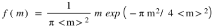
Y la distribución normal o Gaussiana
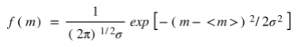
donde σ2 es la varianza.
Como las distribuciones de tamaño y masa raramente son simétricas, es común usar la distribución lognormal en tales estudios
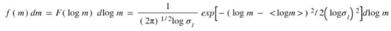
donde
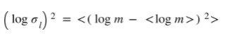
es la varianza en log m.
Es importante notar que, si bien puede haber parecidos entre una distribución de masa y alguna función analítica parametrizada y pueden dar pistas sobre la formación y evolución del sistema, son generalmente las desviaciones de la forma idealizada las que dan las restricciones más particulares. De todas formas, los procesos que gobiernan la evolución de la distribución son tan variados y complejos, que una distribución de equilibrio universal, simple o no, es poco probable que exista. Por lo que las distribuciones parametrizadas de masa deberán ser tenidas en cuenta principalmente como herramientas útiles en la predicción de propiedades integradas de una gran cantidad de estrellas.
Antes de ver la FMI veamos aplicaciones de cómo se mete esta función en el cálculo de varias propiedades integradas en un grupo de estrellas, que puede ser un cúmulo o una galaxia.
Asumamos que en una región del espacio las estrellas nacen a una velocidad B(t), que puede variar con el tiempo de manera arbitraria. La velocidad de formación por unidad de volumen por intervalo de unidad de masa es entonces f(m)B(t).(Podemos asumir que el espectro de masa f(m) posee una dependencia implícita del tiempo, siempre y cuando entendamos que en ese caso no tenemos manera empírica de estimar su forma). Las estrellas pasan casi toda su vida quemando hidrógeno cerca de la secuencia principal y usualmente podemos despreciar las etapas subsecuentes como de corto tiempo de vida por comparación. Luego, asociamos un tiempo de vida 𝜏(m) con cada estrella de masa m.
A cualquier tiempo T después de comenzada la formación estelar, la cantidad total de estrellas en secuencia principal por unidad de volumen va a ser
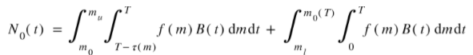
donde m0(T) es la masa donde 𝜏(m)=T. Los límites de integración reflejan el hecho de que las estrellas con 𝜏(m)<T ya han muerto. La masa total de estrellas en secuencia principal al tiempo T, M0(T) está dada por la misma expresión, pero con un factor de m en ambos integrandos.
También se puede estimar la tasa de ocurrencia de eventos estelares, como las supernovas y las nebulosas planetarias. Por ejemplo, si todas las estrellas más masivas que algún límite mSN explotan como supernova al final de sus vidas, y 𝜏(mSN)<T, entonces la tasa de supernova por unidad de volumen a un tiempo T es
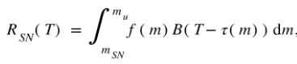
El retraso temporal en la velocidad de nacimiento refleja el hecho de que la tasa de mortalidad de las estrellas de una dada masa depende de la velocidad de nacimiento en tiempo de una vida de secuencia principal atrás.
También podemos escribir una expresión para la distribución de frecuencia de masas de estrellas en una etapa evolutiva en particular. Si una estrella de masa m pasa un tiempo 𝜏P(m) en estado evolutivo antes de la fase de interés y 𝜏i(m)es la duración de la fase, entonces para ser observada en esa fase al tiempo T, esta estrella debe haber nacido entre los tiempos t1=T-𝜏p(m) y t2=T-[𝜏p(m)+ 𝜏i(m)]. La distribución de masa deseada es entonces
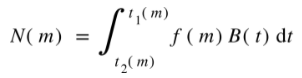
Esta expresión es usada para estudiar la tasa de nebulosas planetarias
Los ejemplos de aplicaciones son muchos, y no comentaremos todos, pero un resultado general que emerge de todas las expresiones de más arriba es que los valores predichos de todas las cantidades dependen tanto del espectro de masa y la historia de la velocidad de nacimiento B(t), incluso si f(m) es independiente del tiempo y el espacio. Es difícil pensar en algún problema de evolución galáctica que no involucre a f(m) y B(t) juntos, y no suele haber un método simple e inequívoco para desenredar sus efectos.
La FMI para estrellas de campo:
La determinación que más está al “alcance de la mano” para realizar, es la de las estrellas cercanas a nosotros, las que son más medibles por nuestros métodos de detección. El método primario para esta determinación es calcular la distribución de frecuencias de luminosidades para estrellas de campo del vecindario solar, convertirla a una distribución de masas usando una relación de masa-luminosidad, y luego corregir la distribución por estrellas que hayan muerto en la historia del disco. Nos referimos a esta función de masa resultante como función de masa inicial de estrellas de campo, y la denotaremos ξ(log m).
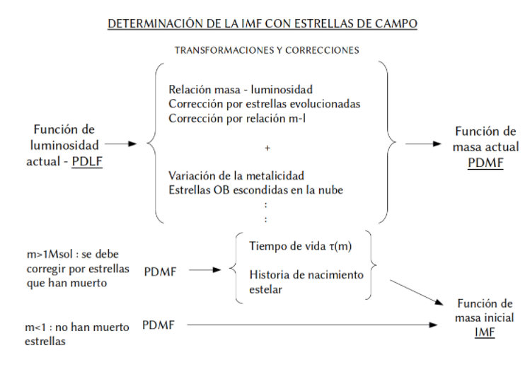
El término estrellas de campo se refiere vagamente a las estrellas en el vecindario solar que en el presente no están en cúmulos. El tamaño del vecindario solar varía mucho de acuerdo al rango de magnitud absoluto estudiado y el método usado para obtener distancias, variando de 40 pc para muestras de estrellas de baja masa (≤ a 2 masas solares) con paralajes trigonométricas confiables, hasta 5kpc para estrellas masivas (≥ a 10 masas solares) cuyas distancias se estiman con paralajes espectroscópicas. Como la cantidad de estrellas del vecindario solar pertenecientes a cúmulos es despreciable, el término estrellas de campo es apropiado excepto para estrellas masivas de las que la mayoría todavía se pueden encontrar en cúmulos y asociaciones por su juventud. Aunque las estrellas de la muestra se toman de regiones del espacio cercanas, el término de vecindario solar puede ser engañoso, sobre todo para masas de 2 masas solares o menores. Las velocidades peculiares aleatorias de las estrellas del disco, típicamente 20-40 km/s, son tan grandes que la mayoría de las estrellas con tiempos de vida de secuencia principal mayores que 109 años, han errado por una parte considerable del disco galáctico a lo largo de su vida, asumiendo una distribución de edad uniforme. Por lo tanto la FMI de estrellas de campo para estrellas de baja masa refleja la FMI promedio de una parte significativa del disco galáctico entero, sin importar que tan chico es el volumen de muestra de nuestras estrellas. Por otro lado, para m≥3 la muestra puede considerarse local con una escala de muestreo de
1-5kpc.
De manera similar, la función de masa a una masa m derivada del conteo de estrellas representa un promedio de la FMI sobre un tiempo igual al tiempo de vida de una estrella de masa m. Para estrellas de baja masa con m≤1 la FMI es un promedio temporal sobre la historia completa del disco, mientras que para m≥3, el promedio sólo cubre los últimos 108 años. Por eso, si la FMI ha variado significativamente con el tiempo o posición de la galaxia, la FMI derivada del conteo de estrellas de campo tiene un significado físico complejo, pues se refiere a promedios sobre escala temporales y espaciales que dependen de la masa. Por eso estamos forzados a asumir que la FMI de estrellas de campo es independiente de la posición en el disco para m≤2, e independiente del tiempo para todas las masas.
La cantidad observacional fundamental utilizada para estimar la FMI de estrellas de campo (sólo FMI en lo que sigue) es la función de luminosidad ø(MV), que da la cantidad de estrellas de todo tipo (no sólo de secuencia principal) observadas a una magnitud absoluta MV visual por unidad de magnitud y unidad de volumen.
La función de luminosidad puede ser transformada en una función de masa øms(log m), que es la cantidad de estrellas de secuencia principal de masa m por intervalo de unidad de log m, por unidad de área. El hecho de que sea en unidad de área se debe a que la función de masa se integra en un área perpendicular a el plano del disco galáctico, ya que hay una dependencia del tipo espectral con la distancia a este plano. La función øms(log m) es llamada función de masa actual, o FMA abreviada, porque se refiere sólo a estrellas que se pueden observar hoy. La relación entre ø(MV) y øms(log m) es
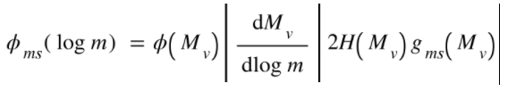
Revisemos estos términos uno por uno:
El primero es la función de luminosidad, dada en términos de MV, por lo que además necesitamos una relación entre la masa y MV, esta es la tan llamada relación masa luminosidad.
Los métodos para determinar la función de luminosidad involucran la obtención de la magnitud aparente m y estimar distancias a estrellas por distintos métodos. De aquí se calculan las magnitudes absolutas. El método más directo es el uso de paralajes trigonométricas, que se pueden medir de manera muy confiable para estrellas cercanas (d <20-50 pc). Para extender el rango de la muestra, en distancias de hasta 1-5kpc se utilizan criterios espectroscópicos, como la paralaje espectroscópica.
También es necesario aclarar si la función de luminosidad es distinta para estrellas del halo galáctico, situación que es validada por varios estudios.
A continuación se muestran las determinaciones para la función de luminosidad en varios rangos de masa junto con la función final.


Determinaciones de la función de luminosidad para estrellas brillantes Determinaciones de la función de luminosidad para estrellas Determinaciones de la función de luminosidad para estrellas
en el rango -7<Mv<-2. en el rango -2<Mv<5. en el rango 4<Mv<10.


Determinaciones de la función de luminosidad para estrellas débiles Función de luminosidad adoptada.
MV >10.
Debemos aclarar que para pasar de una función de luminosidad a una de masa asumimos una relación uno a uno entre estas cantidades, lo cual no es cierto sobre todo para estrellas masivas, donde las estrellas se mueven muchísimo en el diagrama H-R en el transcurso de su vida.
La determinación de la relación masa-luminosidad es en mayor parte debida a la información de binarias visuales con paralajes trigonométricas conocidas con precisión. Pero hay pocos de estos sistemas. La muestra se puede agrandar incluyendo sistemas binarios eclipsantes cuyas curvas de luz muestren dos mínimos y en los que se puedan resolver claramente las líneas espectrales. En estos casos se pueden obtener las masas y los radios directamente, y los valores de MV deben obtenerse usando relaciones empíricas entre el índice de color, brillo visual de la superficie, y MV. Además, se pueden obtener buenas aproximaciones de relaciones teóricas obtenidas de la combinación de cálculos de evolución estelar con escalas de correcciones bolométricas y temperaturas efectivas para convertir luminosidades teóricas a MV.
La relación usada, que se muestra a continuación, conecta una masa con la luminosidad de edad promedio, lo que corrige automáticamente la FL por el efecto del cambio de brillo durante la fase de secuencia principal.


Relación masa-luminosidad empírica obtenida de los datos de estrellas binarias. Relación masa-luminosidad teórica obtenida de los modelos de evolución estelar.
El factor |dMV/dlog m| transforma la función de luminosidad en una función de masa.
El término 2H aporta una corrección a la función de luminosidad por estrellas según su tipo espectral y su distancia perpendicular al plano del disco, en el sentido de que las estrellas más jóvenes están más confinadas al plano mientras que las más adultas están más dispersas. Al término H se lo conoce como escala de amplitud estelar, y a continuación se muestra la relación adoptada para su corrección.

Relación adoptada entre la amplitud de escala estelar y la magnitud absoluta visual.
El factor final, gms(MV), que convierte la FL en una función de masa, es la fracción de estrellas que están en la secuencia principal a una dada MV. Este factor corrige la FL por la presencia de estrellas evolucionadas. Es una corrección significativa parapara MV≤4, pero está determinada pobremente, en especial para las estrellas más brillantes. Para estrellas con Mv≥12 la corrección es un poco menor que la unidad debido a la presencia de enanas blancas.

Estimaciones de la fracción de estrellas que están en etapa de quema de hidrógeno en el núcleo en función de la magnitud absoluta visual.
Con todos estos factores, queda hecho el cambio de la función de la función de luminosidad, a la FMA, mostrada a continuación

Función de masa actual
Pero la FMA no refleja la distribución de masas al nacer debido a los efectos de evolución estelar. Las estrellas con masas m ≤ 1 tienen vidas tan largas como la edad del disco, por lo que para estas masas la FMA cuenta todas las estrellas alguna vez nacidas, y es una integral de tiempo de la FMI sobre los últimos 1010 años. Pero las estrellas más masivas tienen vidas más cortas, y sólo observamos una porción de las estrellas nacidas. Esta porción decrece con el aumento de la masa. La corrección involucra el tiempo de vida como función de la masa, y la velocidad de formación como función del tiempo, y se utiliza una función de creación C(log m,t) dlog m dt, que es la cantidad de estrellas nacidas por unidad de área en el disco galáctico en el rango de masa log m y log m + dlog m durante un intervalo de tiempo t y t + dt, promediado sobre una región grande apropiada centrada en el Sol. Todas las estrellas con tiempos de vida de secuencia principal 𝜏(m) mayores que la edad del disco galáctico T0 todavía están en la secuencia principal, así que la cantidad de estas estrellas es
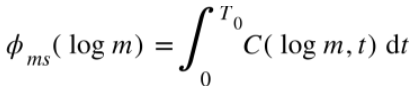
para 𝜏(m)≥T0.
Es útil denotar por m(t) a la masa estelar que corresponde al tiempo de vida t. Luego la expresión anteriores válida para m<m(T0). Para estrellas con tiempos de vida 𝜏(m)<T0, sólo vemos aquellas estrellas nacidas en los últimos 𝜏(m) años, pues todas las estrellas nacidas entre t=0 y t= T0-𝜏(m) han evolucionado en la secuencia principal. Luego
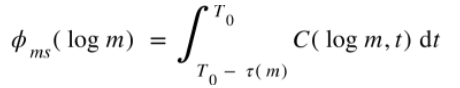
para 𝜏(m) <T0.
Estas ecuaciones se pueden simplificar asumiendo que la función de creación se puede separar en partes de tiempo y de masa
C(log m,t) =F(log m)B(t),
donde B(t) es la tasa de nacimiento estelar total por unidad de área del disco al tiempo t, normalizado de manera que
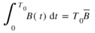
con
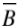
la tasa de nacimiento promedio en la historia del disco. La cantidad T0 es el número total de estrellas alguna vez formadas en el disco galáctico. Se suele decir que la asunción de una función de creación separable se hace mayormente con el fin de la conveniencia y la simplicidad, pues hay poca evidencia teórica u observacional a favor o en contra esta asunción. De todas formas, se debe recordar que la asunción es obligatoria si queremos tener una definición práctica y consistente de la FMI. En este caso, podemos escribir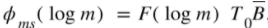
para 𝜏(m)≥T0.
La cantidad de la derecha representa el número de estrellas por unidad de área y unidad de log m con 𝜏>T0 que alguna vez se formaron, y esencialmente define las unidades de la FMI, ξ(log m);
ξ(log m) =F(log m) T0
Para una función de masa independiente del tiempo F(log m), ξ(log m) es equivalente a la distribución de masa al nacer, dentro de una constante normalizadora. Es útil introducir la tasa de nacimiento relativa b(t)como la razón entre la tasa de nacimiento a tiempo t, B(t), con la tasa de nacimiento promediada sobre la historia pasada del disco. La condición de normalización para b(t)es
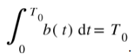
Si bien la determinación de la tasa de nacimiento promedio de la historia del disco no es fácil de obtener, se puede asumir que la tasa a lo largo de la historia del disco no fue variando considerablemente, y si lo hizo, fue oscilando entre un valor medio que compensa el efecto de esta variación. Además, distintos tipos de razonamiento sugieren que la tasa de nacimiento es una función monótonamente decreciente, pero que ha variado muy poco en la historia.
En estas condiciones, la función de creación es
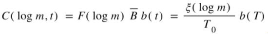
y la FMI está dada en términos de la función de masa del día de hoy observable de la forma
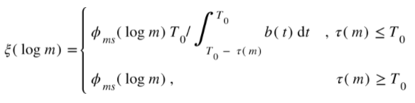
Y las ecuaciones dadas al principio son válidas cambiando f(m) con ξ(log m)

Función de masa inicial derivada
Comentarios finales:
La FMI de estrellas de campo tiene la ventaja de cubrir el rango entero de masas estelares con un único método. Su desventaja es la dependencia y sensibilidad a muchísimas cantidades teóricas y observacionales conocidas inadecuadamente. Además, el resultado derivado sólo tiene sentido si la FMI promedio ensamblada es una función universal, independiente del espacio y del tiempo. Pero más allá de la incerteza de saber si la función que derivamos se encuentra algo cercana a la realidad del proceso que gobierna la formación estelar, ya es un paso importante para proceder con las comparaciones de otras estimaciones de FMI entre grupos estelares, como cúmulos y galaxias, y en el caso de que las FMIs varíen, tanto entre ellas como con sigo mismas en tiempo y espacio, analizar estas fluctuaciones y ver si existe una dependencia de las propiedades de los grupos estelares.
Además, hay varios efectos potencialmente significativos que no han sido considerados. Uno es el efecto de binarias no resueltas. Si la separación angular de una binaria es menor que algún límite que depende de la diferencia de magnitudes, el telescopio, las condiciones de seeing, etc., la binaria será definida como una estrella individual. Esto tiene el efecto de colocar un objeto en la función de luminosidad aparente en la luminosidad combinada del par en vez de dos objetos en luminosidades más débiles.
Otro efecto potencialmente importante tiene que ver con el hecho de las estrellas podrían no ser visibles durante una porción significativa de sus tiempos de vida. Es bien sabido que las estrellas se forman dentro de nubes interestelares densas que son usualmente opacas, a menudo presentando más de 5-10 magnitudes de extensión. Estrellas muy jóvenes en tales nubes sólo pueden ser detectadas por la radiación infrarroja del polvo circundante que calientan, o por emisiones de radio de sus regiones HII para estrellas masivas.
Bibliografía :
-The stellar initial mass function, John M.Scalo.
http://www.as.utexas.edu/astronomy/people/scalo/Scalo1986.IMF.FundCosPhys.pdf
-Función de masa inicial, wiki de la cátedra.
http://astronomiaestelarlp.pbworks.com/w/page/113889523/Funci%C3%B3n%20de%20masa%20inicial